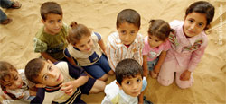

|
Donnerstag, 25. April 2013 |
Endlich Schutz für südasiatische Textilarbeiterinnen
Nach dem Einsturz des Rana Plaza Building in Savar/Bangladesch |
Angesichts des schrecklichen Unglücks in Savar/Bangladesch, dem hunderte von Menschen zum Opfer gefallen sind, fordert das internationale Kinderhilfswerk terre des hommes sofortige Konsequenzen seitens der Regierung Bangladeschs, der Europäischen Union und global tätiger Handelsunternehmen. »Wieder hat die Arbeit für internationale Modehäusermarken zahlreiche Menschen das Leben gekostet. Wir dürfen nicht länger hinnehmen, dass immer wieder Arbeiterinnen in den Zulieferstaaten der Textilunternehmen Opfer von Arbeitsbedingungen werden, auf denen auch unser Konsum beruht«, erklärte Barbara Küppers, Kinderrechtsexpertin von terre des hommes. »Wir fordern deshalb die EU auf, weiterhin und konsequent die Regierung von Bangladesch auf die Einhaltung grundlegender Menschen- und Arbeitsrechte zu drängen. Alle internationalen Handelsunternehmen müssen grundlegende Sicherheitsstandards bei ihren Zulieferern einfordern und prüfen und – im Dialog mit örtlichen Arbeitgeberverbänden und Gewerkschaften – sich verbindlich für die Umsetzung grundlegender Standards einsetzen. Es liegt in der Verantwortung der jeweiligen Regierungen, die jeweiligen Bauvorschriften tatsächlich und wirksam zu prüfen und die Sicherheit der Bevölkerung zu gewährleisten«, so Küppers.
terre des hommes fördert in Südasien zahlreiche Programme zum Schutz von Textilarbeiterinnen und gegen die Ausbeutung von Kindern. Außerdem setzt sich terre des hommes dafür ein, dass Staaten die Konventionen der Internationalen Arbeitsorganisation und Handelsunternehmen die Sozial- und Umweltstandards einhalten, existenzsichernde Löhne zahlen und keine Kinder als Arbeitskräfte ausbeuten. An Verbraucher appelliert terre des hommes, Produkte aus Fairem Handel oder mit einem seriösen Sozialsiegel zu kaufen. |
»Zukunft säen« – für die Kinder unserer Erde!
Schauspieler Hannes Jaenicke unterstützt terre des hommes-Kampagne |
Das internationale Kinderhilfswerk terre des hommes macht anlässlich des Internationalen Tages der Erde am 22. April auf die fatalen Folgen der Umweltzerstörung für Kinder aufmerksam und ruft mit der Aktion Zukunft säen für die Kinder unserer Erde zu einer ökologischen Wende auf. Klimawandel und Umweltschäden bedrohen die Zukunft von Millionen Kindern. Jedes Jahr sterben vier Millionen Kinder unter fünf Jahren an umweltbedingten Krankheiten.
Die Aktion ist Teil der Kampagne Kinder haften für ihre Eltern: Stoppt Naturzerstörung – Gesunde Umwelt für alle Kinder, mit der sich terre des hommes für das Kinderrecht auf eine gesunde Umwelt engagiert. Der Schauspieler Hannes Jaenicke unterstützt die Kampagne. »Besonders Kinder in armen Ländern, die sich am wenigsten wehren können, leiden unter der immer schneller fortschreitenden Vernichtung ihrer Lebensgrundlagen. terre des hommes gibt ihnen eine Stimme und setzt sich für ihre Rechte ein. Deshalb unterstütze ich die terre des hommes-Kampagne«, so Hannes Jaenicke.
»Wir wollen, dass die Umwelt geschützt wird und für unsere Kinder erhalten bleibt«, sagte Danuta Sacher, Vorstandsvorsitzende von terre des hommes. »Das erfordert zügiges Umsteuern von Wirtschaft und Konsum weg von der ständigen Überausbeutung der Natur. Nur so haben die Bedürfnisse auch der Kinder von morgen eine Chance. Damit diese bei politischen und wirtschaftlichen Entscheidungen von langfristiger Tragweite berücksichtigt werden, setzen wir uns für die Schaffung von Ombudsstellen für die Rechte zukünftiger Generationen auf nationaler und kommunaler Ebene ein.«
Mit zahlreichen Programmen in Lateinamerika, Asien und Afrika sorgen Projektpartner von terre des hommes dafür, dass die Folgen der Umweltverschmutzung für Kinder abgemildert werden: In Sambia unterstützt terre des hommes die Anwohner einer Kupfermine bei ihrem Engagement für mehr Umweltschutz, in Südostasien setzen sich mehr als 20.000 Kinder für saubere Flüsse ein. In Peru fördert terre des hommes den Anbau nährstoffhaltiger Pflanzen, die den extremen Wetterbedingungen der Anden trotzen. |
Neues europaweites Projekt will Gesundheitsversorgung weltweit stärken
Zur europäischen »Woche der Gesundheitsfachkräfte« |
Rund eine Milliarde Menschen weltweit haben keinen ausreichenden Zugang zu Ärzten und Gesundheitsfachkräften. Um die globalen Ungleichheiten bei der Versorgung mit Gesundheitsdiensten zu beseitigen, startet zur europaweiten »Woche der Gesundheitsfachkräfte« vom 8. bis 12. April heute das auf drei Jahre angelegte Projekt »Gesundheitsfachkräfte für alle«. Es wird von Nichtregierungsorganisationen in acht europäischen Ländern getragen. Das internationale Kinderhilfswerk terre des hommes beteiligt sich als deutscher Partner an dieser Initiative.
»Derzeit herrscht in rund 50 armen Ländern ein gravierender Mangel an Gesundheitsfachkräften. Dort sterben Kinder an vermeidbaren oder behandelbaren Krankheiten wie Durchfall und Masern«, erklärte Heino Güllemann, Gesundheitsexperte von terre des hommes. »Zugleich wächst in den Gesellschaften der reichen Länder die Nachfrage nach Pflege- und Gesundheitskräften. Wenn immer mehr gut ausgebildete Gesundheitsfachkräfte aus den Ländern des Südens nach Europa abwandern, schwächt dies die Gesundheitssysteme in ihren Herkunftsländern und zementiert die Ungleichheit der Basisgesundheitsversorgung zwischen Nord und Süd.«
Ziel des Projektes ist es, in den Mitgliedsländern der Europäischen Union Lobbyarbeit für die Stärkung globaler Gesundheitsversorgung zu betreiben. »Als Hilfswerk, das mit zahlreichen Projekten die Basisgesundheitsversorgung von Kindern und ihren Familien sichert, folgen wir dabei einem integralen Verständnis von Gesundheit und nehmen auch die Folgen von Armut und Unterernährung in den Blick. Wer die Gesundheit von Müttern und Kindern in afrikanischen Dörfern nachhaltig stärken will, muss ihre ausreichende Ernährung sicherstellen und dafür sorgen, dass Gesundheitsdienste bezahlbar sind und sich in erreichbarer Nähe befinden. Dazu gehört auch, in den reichen Ländern Einfluss zu nehmen, wenn ihre Politik den Mangel an Gesundheitsfachkräften mit verursacht«, sagte Heino Güllemann.
Über das Projekt:
Das Projekt »Gesundheitsfachkräfte für alle« ist eine europaweite Initiative und orientiert sich am Globalen Verhaltenskodex der Weltgesundheitsorganisation WHO zur internationalen Rekrutierung von Gesundheitspersonal. Der Verhaltenskodex wurde 2010 von allen Mitgliedsländern der WHO und damit auch allen europäischen Ländern angenommen. Das Programm wird zeitgleich in Deutschland, Belgien, Großbritannien, Italien, den Niederlanden, Polen, Rumänien, Spanien und mit der Europäischen Union umgesetzt und von der EU in Deutschland mit 84.000 Euro gefördert.
Weitere Informationen:
|
Syrien: »Die Not wird täglich größer«
Bündnis-Mitglieder arbeiten unter schwierigsten Bedingungen |
 Die Infrastruktur zerstört, die Strom- und Wasserverteilung unterbrochen, die Preise für Grundnahrungsmittel und Treibstoffe astronomisch hoch – bittere Realität in Syrien, zwei Jahre nach Beginn des Aufstands. »Die Not wird täglich größer«, mahnt Peter Mucke, Geschäftsführer von Bündnis Entwicklung Hilft. Den Menschen, die zum Beispiel in Schulen oder anderen öffentlichen Gebäuden Zuflucht gesucht hätten, mangle es an allem, was zum Überleben notwendig sei. »Alarmierend ist auch, dass sich die Gesundheitssituation rapide verschlechtert«, erklärt Mucke. »Unsere Partner vor Ort berichten, dass Medikamente fehlen und es in einigen Städten bereits zu Typhus-, Leishmaniose- und Masernausbrüchen gekommen ist. Die Lage ist äußerst kritisch. Zumal ein Ende der Kämpfe nicht in Sicht ist.« Die Infrastruktur zerstört, die Strom- und Wasserverteilung unterbrochen, die Preise für Grundnahrungsmittel und Treibstoffe astronomisch hoch – bittere Realität in Syrien, zwei Jahre nach Beginn des Aufstands. »Die Not wird täglich größer«, mahnt Peter Mucke, Geschäftsführer von Bündnis Entwicklung Hilft. Den Menschen, die zum Beispiel in Schulen oder anderen öffentlichen Gebäuden Zuflucht gesucht hätten, mangle es an allem, was zum Überleben notwendig sei. »Alarmierend ist auch, dass sich die Gesundheitssituation rapide verschlechtert«, erklärt Mucke. »Unsere Partner vor Ort berichten, dass Medikamente fehlen und es in einigen Städten bereits zu Typhus-, Leishmaniose- und Masernausbrüchen gekommen ist. Die Lage ist äußerst kritisch. Zumal ein Ende der Kämpfe nicht in Sicht ist.«
Die Bündnis-Mitglieder medico international, Misereor und Welthungerhilfe sind deshalb weiterhin in Syrien, an der türkisch-syrischen Grenze, im Libanon und im jordanischen Grenzgebiet aktiv. Die lokalen Partner der Hilfswerke stehen den Opfern des Bürgerkriegs bei – unter immer schwierigeren Bedingungen.
»Die Mitarbeiter unseres Partners Jesuit Refugee Service (JRS) setzen sich jeden Tag großen Gefahren aus, um Hilfe zu leisten und um den Menschen ein wenig Normalität zu ermöglichen«, erklärt Maria Haarmann, Syrien-Referentin bei Bündnis-Mitglied Misereor. Zum Beispiel organisiert JRS Transporte für Kinder, die in Kampfzonen leben. Ohne diese Transportmöglichkeit wäre es für die Kinder nicht möglich, an den Aktivitäten teilzunehmen, die im JRS-Zentrum stattfinden. Da ein Großteil der staatlichen Schulen schon seit Monaten geschlossen ist, wird den Kindern hier unter anderem Ersatz-Schulunterricht angeboten. JRS ist in Damaskus, Homs und Aleppo aktiv. Insgesamt unterstützt Misereor die Flüchtlingshilfe in Syrien und im jordanischen Grenzgebiet mit 670.000 Euro.
Bündnis-Mitglied Welthungerhilfe hat gemeinsam mit seinem langjährigen Projektpartner People In Need (PIN) in den Regierungsbezirken Aleppo, Hama und Idlib ein Nothilfeprogramm gestartet, Zielgruppe sind 20.000 Menschen. »Der Binnenmarkt ist fast zum Erliegen gekommen, ein Großteil der Bevölkerung hat keine Möglichkeit mehr, Geld zu verdienen«, erklärt Simone Pott, Sprecherin der Welthungerhilfe. »Fabriken sind geschlossen, der Handel mit Nachbarländern findet nicht mehr statt, und auch die Landwirtschaft liegt brach.« Die Welthungerhilfe und PIN verteilen deshalb an 3.000 besonders stark betroffene Familien Nahrungsmittelpakete und Bargeld. Die Kombination ermöglicht es den Menschen, selbst zu entscheiden, welche Nahrung sie zukaufen wollen, gleichzeitig werden die lokalen Märkte stimuliert.
»Hêwî«, Kurdisch für »Hoffnung«, nennt sich das Bürgerkomitee, das in der vorwiegend von Kurden bewohnten Provinz Hasaka im Nordosten Syriens aktiv ist. Unter anderem versorgt Hêwî mit Unterstützung von Bündnis-Mitglied medico international 600 registrierte Familien mit dem Lebensnotwendigsten. »Heute haben die Waffen das Sagen, aber es geht nicht nur um heute, sondern auch um unsere Zukunft«, antwortet Abdel Halim, Journalist und Mitbegründer von Hêwî auf die Frage, warum er weiterhin in Syrien ausharrt und unter zum Teil lebensgefährlichen Bedingungen Hilfe leistet. Halim ist überzeugt: »Wir brauchen zivile Strukturen für ein besseres Morgen.« Laut UN-Angaben sind mittlerweile eine Million Menschen auf der Flucht vor dem Bürgerkrieg in Syrien. Bündnis-Geschäftsführer Peter Mucke erklärt: »Wir beobachten die Situation mit großer Sorge und sind bereit, die Hilfe auszuweiten.«
Brot für die Welt, Christoffel-Blindenmission, Kindernothilfe, medico international, Misereor, terre des hommes und Welthungerhilfe leisten als Bündnis Entwicklung Hilft akute und langfristige Hilfe bei Katastrophen und in Krisengebieten.
Weitere Informationen:
Ihre Spende - Stichwort: "Syrien"
Spendenkonto 51 51
Bank für Sozialwirtschaft
BLZ 370 205 00
Spendenkonto 120 790
Sparkasse Baden-Baden / Gaggenau
BLZ 662 500 30
Spendenkonto 102 748 00
VoBa Baden-Baden / Rastatt
BLZ 662 900 00 |
Palästinensische Gebiete: 40 Jahre Hilfe für palästinensische Kinder |
Bericht von terre des hommes Schweiz, www.tdh.ch
|  |
Foto: terre des hommes Kinderhilfe Lausanne, Florian Cella |
Terre des hommes ist seit 1973 in den Palästinensischen Gebieten präsent. 1973 war das Jahr des israelisch-arabischen Jom-Kippur-Kriegs, in dem syrische und ägyptische Truppen versuchten, die 1967 während des Sechstagekriegs verlorenen Gebieten zurückzugewinnen. 40 Jahre später hat sich für die Palästinenser nichts geändert. Die Kinder von 1973 sind die Eltern oder gar Grosseltern der Kinder von heute, und die Friedensaussichten scheinen weiter in die Ferne gerückt denn je. Das Land der Palästinenser wird nach und nach von israelischen Siedlungen einverleibt, hinter Sicherheitsmauern abgeschottet und wirtschaftlich isoliert. Einschränkungen der Bewegungsfreiheit (im Westjordanland gibt es nicht weniger als 100 feste Checkpoints, wechselnde Checkpoints nicht mitgezählt), Schikanen der Behörden, Konfiszierung von Land und Wasser, Ausweisungen und willkürliche Verhaftungen sind das tägliche Los der Zivilbevölkerung, ungeachtet des Schutzes, den die Besatzungskräfte ihr nach internationalem Recht eigentlich schulden.
In den besetzten Gebieten Kind sein, bedeutet in der täglichen, zur Banalität gewordenen Gewalt von Militärübergriffen aufwachsen, Hausdurchsuchungen mitten in der Nacht, Freunde und Eltern im Gefängnis. Manchmal bedeutet es auch, auf dem Schulhof grundlos verhaftet zu werden – wie das am vergangenen 23. März für 27 Kinder im Alter von 7 bis 15 Jahren in Hebron der Fall war – und ab 12 Jahren mit der Militärjustiz konfrontiert zu werden (siehe dazu die jüngste Studie von UNICEF). Vielleicht auch, dass das eigene Haus von bewaffneten Kräften zerstört oder von Siedlern bewohnt wird. In Gaza bedeutet es, unter den Einschränkungen der Wirtschaftsblockade und der Angst vor nächtlichen Luftangriffen leiden: Die letzte Militäroperation «Säule der Verteidigung» vom 15. bis 21. November 2012 forderte den Tod von 33 Kindern und traumatisierte viele andere. Doch vor allem bedeutet es, dass Kinder in Palästina mit Hass, Wut und einem Gefühl von Ungerechtigkeit gross werden.
Natürlich sind nicht alle Probleme des Kinderschutzes auf den israelisch-palästinensischen Konflikt zurückzuführen, einige verbreitete Gepflogenheiten wie das Ehrenverbrechen, häusliche Gewalt und Frühheiraten verletzen ebenfalls die Rechte der palästinensischen Kinder. Und auch das Schicksal ausserehelich geborener Kinder ist nicht beneidenswert. Unter solch komplexen Umständen bemüht sich Terre des hommes seit 40 Jahren, Kindern konkret und wirksam zu helfen. Nachdem sich die Organisation im Bereich der Ernährung und Gesundheit für Mutter und Kind einen Namen gemacht und in Hebron und Gaza zwei spezialisierte Organisationen (Ard al Atfal und Ard al Insan) aufgebaut hat, konzentriert sie sich heute auf folgende drei Hauptbereiche: die Bekämpfung der Kinderarbeit, das Jugendstrafrecht und Kinderschutzsysteme. Sie ist in zwei Städten mit besonders prekären Bedingungen aktiv: in Hebron, dessen historisches Zentrum von israelischen Siedlern besetzt ist und wo es täglich zu Auseinandersetzungen kommt, und in Gaza, über das seit 2007 eine Wirtschafts- und Militärblockade verhängt ist.
In Gaza wandte sich Terre des hommes nach der Militäroperation «Gegossenes Blei» vom Winter 2008-2009 der Bekämpfung der Kinderarbeit zu. Man konnte damals häufig sehen, wie sich zahlreiche Kinder in die gefährliche Pufferzone entlang der grünen Linie wagten, um dort in den Ruinen nach Baumaterial zu suchen, das infolge der Wirtschaftsblockade nicht mehr erhältlich war. Nicht selten näherten sich Kinder zu sehr der Sperranlage und gelangten ins Schussfeld israelischer Soldaten. 2010 konnte Terre des hommes im Rahmen eines Pilotprojekts in Beit Lahiya und Zeitoun, im Norden des Gazastreifens, rund fünfzig arbeitende Kinder, deren Familien wirtschaftlich unterstützt wurden, wieder in Schulen und Berufsbildungszentren integrieren. In Beit Lahiya bietet Terre des hommes seit Juni 2012 in einem Zentrum für arbeitende Kinder Schutz und Bildung und setzt sich zusammen mit der Bevölkerung weiterhin aktiv für deren schulische und gesellschaftliche Wiedereingliederung ein.
Im Bereich des Jugendstrafrechts arbeitet Terre des hommes eng mit den palästinensischen Behörden zusammen, um ihre Kenntnisse der Kinderrechte und internationaler Normen sicherzustellen. Eine wichtige Zielsetzung ist die Stärkung der Rolle von Sozialarbeitern, um die Betreuung und Begleitung von Kindern während des gesamten Strafverfahrens zu verbessern. Palästina ist übrigens ein Land, in dem die von nichtstaatlichen Akteuren ausgeübte Justiz eine bedeutende Rolle spielt, parallel zu den von der Palästinensischen Autonomiebehörde eingeführten Verfahren. In Hebron und Gaza wurden zwei Untersuchungen durchgeführt, um die Geschichte und Funktionsweise der informellen Justiz zu klären, die verschiedenen involvierten Akteure zu identifizieren und zu verstehen, welchen Platz die Kinder in diesen Mechanismen einnehmen. Terre des hommes möchte sich heute auf die gesellschaftliche Wiedereingliederung von straffälligen Kindern konzentrieren, einschliesslich derer, die in israelischen Gefängnissen waren, und das Engagement für den Aufbau wirksamer Kinderschutzsysteme in Gaza und Hebron fortsetzen.
Zum Original-Artikel |
|
|
|
 Ansprechpartner Ansprechpartner
|
|
Wolfgang Deppisch
(Projektinfos)
Tel. 07222 / 32927
Heinz Wolf
(Sponsoring, Allgemeines)
Tel. 07225 / 75543
weitere Ansprechpartner
|
|
Erlöse
1992-2012
|
|

Jahr |
Euro |
1992 |
70.000 |
1993 |
75.600 |
1994 |
83.883 |
1995 |
69.617 |
1996 |
51.412 |
1997 |
61.749 |
1998 |
60.333 |
1999 |
68.742 |
2000 |
85.492 |
2001 |
106.375 |
2002 |
78.937 |
2003 |
84.027 |
2004 |
76.662 |
2005 |
149.941 |
2006 |
84.497 |
2007 |
105.958 |
2008 |
104.053 |
2009 |
100.833 |
2010 |
107.254 |
2011 |
103.600 |
| 2012 |
158.250 |
| 2013 |
163.420 |
1977-2013 |
mehr als 2,7 Mio. € |
|
Detailansicht der Erlöszahlen |
|
|


;)